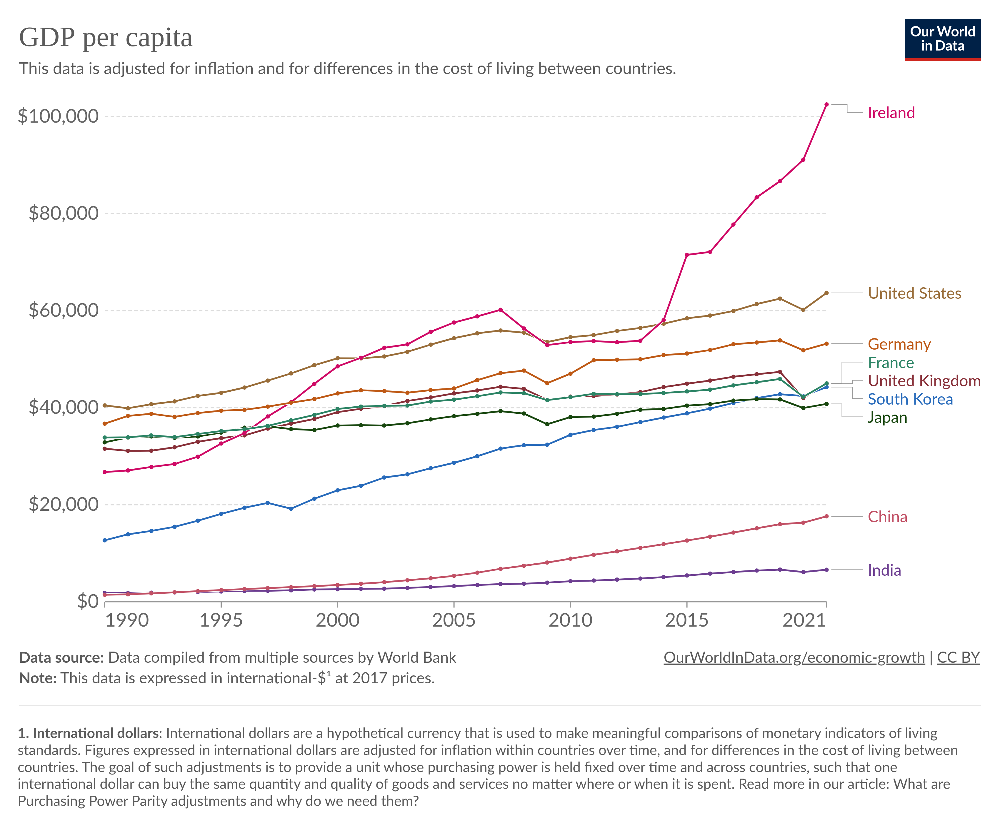
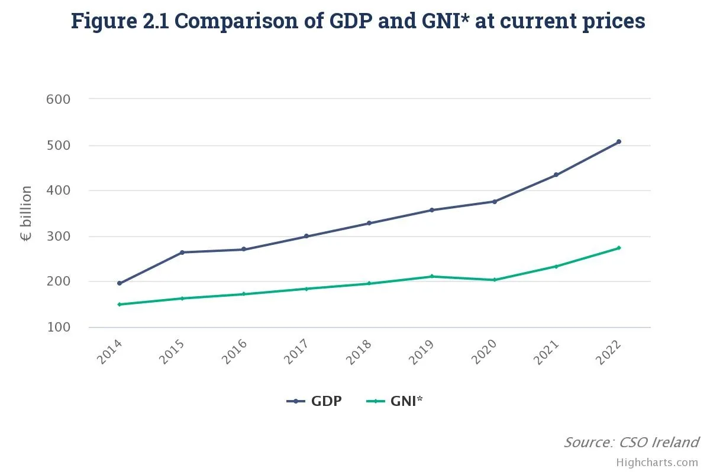
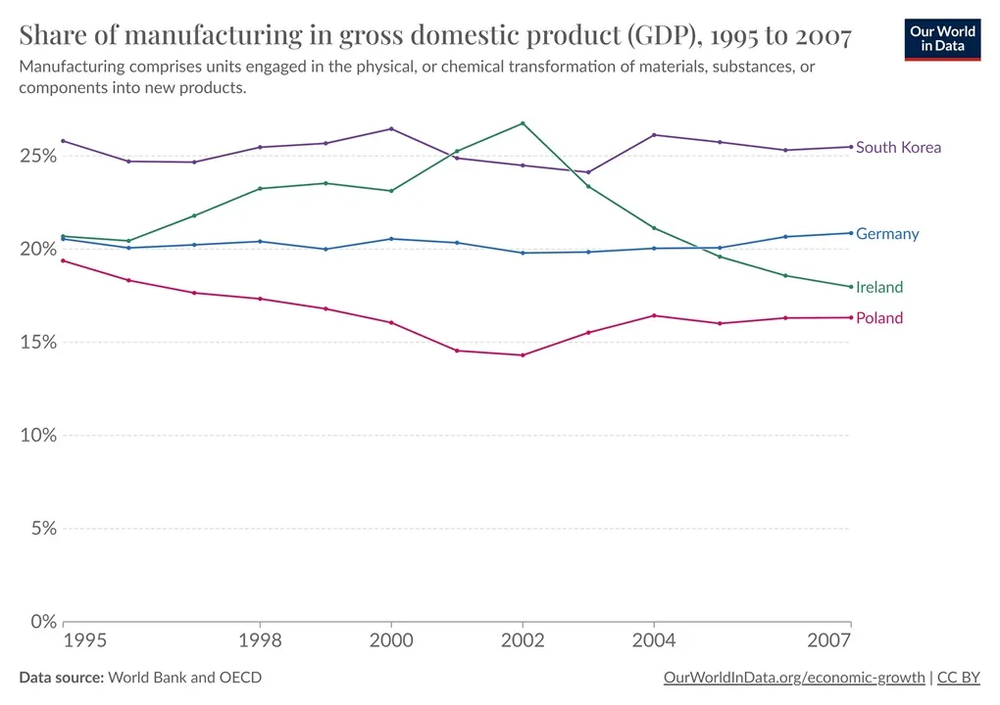

26 Ireland
Smith
My mental visions of the country were always ones of poverty and strife — the potato famine, the penniless migrants flooding American shores in the 1800s, Jonathan Swift satire, James Joyce novels, the Troubles, and so on. And as recently as 1991, there was still a bit of truth to the stereotype — Ireland had a lower per capita GDP than most of the other countries in West Europe. But 16 miraculous years later, the situation had reversed:

Of course, you may have heard that Ireland’s GDP is massively overstated. And indeed it is — now, recently Irish GDP soars to ridiculous heights — over $100,000 per person. The country is rich, but it’s not that rich.
Ireland’s GDP is overstated for two main reasons. First, and most importantly, Ireland is a famous tax haven — its low corporate income tax rates give multinational companies an incentive to book as much of their profit as possible at their Irish subsidiaries. For European companies, this usually required actually relocating their activities to Ireland, but the U.S. has a strange corporate tax system that allows companies like Google and Apple to engage in various other schemes to book profits in Ireland without actually doing anything substantial in the country, inflating Ireland’s GDP. A second piece of weirdness was aircraft leasing, whose statistical treatment doesn’t make a lot of sense.
In an attempt to stop exaggerating its GDP, Ireland implemented a special statistical system called GNI, or modified gross national income. Ireland’s GNI is a little over half of its GDP.

GNI* didn’t really start to diverge from GDP until 2000, and even in 2007 the divergence was pretty small. The stunning growth of the Irish economy in the 1990s and early 2000s was very real. And despite getting hit famously hard by the bursting of the housing bubble in 2008, Ireland retains its status as one of the world’s richest economies. The country may no longer be the “Celtic Tiger”, but its gains during that glorious epoch appear secure.
Ireland is also part of a small, elite club of countries that is richer than its 19th-century imperial overlord, along with South Korea, Poland, the Baltics, and a few others. It’s Britain’s turn to be the shabby, dysfunctional cousins.
Ireland’s exports are heavily weighted toward the biomedical and pharmaceutical industry, with some high-tech electronics manufacturing as well.
If you go back to the “Celtic Tiger” years, electronics manufacturing was a little more prominent, but the basic pattern was probably the same. In general, Ireland was a pretty manufacturing-intensive economy during its boom years, in the same league as South Korea or Germany.

Ireland is a small country, meaning it can’t really make much stuff for the domestic market, because there just isn’t much of a domestic market. So Ireland’s economic success naturally involved a lot of exports. In fact, Ireland is traditionally more export-oriented than South Korea.
In other words, the Celtic Tiger looked much like the Asian Tigers did — a country that made a lot of high-tech products and sold them to the rest of the world. Of course, a country can’t get by on export manufacturing alone — you need to have a robust local economy to circulate and multiply the gains from export revenue. But export manufacturing is useful for a number of reasons. Manufacturing inherently tends to have rapid productivity growth. And many people think exporting raises productivity growth as well, by forcing local companies to compete in global markets and helping them to absorb foreign technologies.
One reason Ireland has been able to accomplish this is its special relationships with two important economies: the U.S. and Europe.
Ireland’s export destinations are actually very diversified. Europe obviously looms the largest. Ireland’s embrace of Europe stands as a stark contrast to Britain, which is still reeling economically from Brexit.
When it comes to investment capital, Ireland has an even bigger ace in the hole — the United States. U.S. is by far the biggest source of that investment.
Ireland is the most popular destination for new Foreign Direct Investment (FDI) projects in the EU, when measured on a per capita basis. The attraction of FDI to Ireland has been a cornerstone of Irish government policy since the 1960’s and FDI now plays a very significant role in supporting the Irish economy.
Investment has come primarily from the U.S., with the large Irish diaspora overseas helping to facilitate connections. In 2020, U.S. FDI in Ireland stood at USD 390 billion, more than the U.S. total for Brazil, Russia, India, China, and South Africa (the BRICS) combined. While investment from all sectors has been welcomed, those offering high value-to-volume products for export (e.g. ICT and Pharma) have been favoured.
In terms of global distribution, 847 of the multinationals investing in Ireland are from the United States, 354 companies are of European origin – with almost half of those from Germany and France, 136 are UK origin client companies, and 212 come from across the rest of the world. One report I read referred to Ireland as “an intermediary between Silicon Valley and Europe”.
The U.S. has a big Irish diaspora — about 36 million strong, over seven times the population of Ireland itself.
Over the centuries, Ireland’s tendency to send its young people abroad has traditionally been seen as a weakness; since 1990, Ireland has been an object lesson in how outmigration can boomerang and eventually become a strength.
Irish policy does it all
Roughly speaking, there are three varieties of development policy. These are:
Liberalization
Capacity building
Industrial policy
Liberalization just means removing the barriers to economic activity — high taxes, regulation, trade barriers, and so on. Capacity building means investing in things like education, health, and infrastructure. And industrial policy can mean lots of different things, from subsidizing exports to courting foreign investment to promoting specific industries.
Back in the 1950s when Ireland mainly exported farm products, its leaders recognized how crucial foreign market access was. In the 1970s, economic policy influencers like T.K. Whitaker successfully argued for free trade — which is essential if you’re a small country without much of a domestic market. The EEC and EU were, of course, essential for this. In fact, one big growth advantage of small countries over big ones might simply be trade openness; in a small country, everyone realizes that the domestic market isn’t enough.
Ireland also has famously low corporate tax rates, which are part of what give it its reputation as a tax haven (the other part being some weird tax loopholes). But in fact, this wasn’t always the case. Until the late 90s, Ireland had high tax rates on every sort of corporate income except manufacturing, for which the rate was very low.
This is sort of a combination of liberalization and industrial policy. Preferential low rates on manufacturing helped bias economic activity toward things like electronics and pharma; without this split rate, Ireland might have become finance-heavy like the UK.
In fact, one wonders whether cutting tax rates for other kinds of corporate income might have inadvertently pushed Irish investment away from the strengths of the Celtic Tiger period and toward things like housing speculation and tax haven shenanigans.
But it’s also the case that tax havens tend to grow faster than other countries. Part of the reason might be that many tax systems only allow companies to take advantage of a country’s low tax rates if they actually move their factories to that country. So Ireland might be absorbing foreign technology by luring companies in with tax arbitrage.
Partly as a result of low tax rates and various other business-friendly policies, Ireland regularly ranks near the top of various “competitiveness” rankings; in 2023 it was #2 on IMD’s global list, behind only Denmark, with especially high rankings in “business efficiency” and “government efficiency”.
Some thinkers like Ha-Joon Chang have concerns with FDI as a driver of development. They worry that foreign companies won’t let go of their best technologies, and that foreign brands will crowd out domestic ones, ultimately limiting a nation’s ascension to the top of the value chain. Irish policymakers have shared this concern, making various attempts to promote domestic innovation. So far it’s not clear how effective this has been (especially because Ireland’s tax shenanigans make macro data difficult to assess).
To build a rich economy, one thing you definitely need is a lot of skilled labor. There are two ways to get skilled labor — education and immigration — and in general you should use both. Ireland did. Its baby boom was bigger and lasted much longer than other rich countries
But Ireland has also imported large numbers of workers. In the 90s, a traditional pattern of outmigration reversed, and people started moving to Ireland en masse.
These immigrants tend to skew young. And they’re disproportionately high-skilled; in 2022, more than half of immigrants to Ireland had a university degree or similar.
In other words, there are a lot of things Ireland did to try to produce an economic miracle. It liberalized its trade policy, cut taxes, created a favorable climate for business, and drew in a bunch of immigrants. But it also encouraged manufacturing, tried to promote domestic innovation, and invested heavily in education. Ireland did it all, and somehow, it worked out.
Ireland’s biggest policy challenge right now, without a doubt, is housing. Rapid immigration, along with replacement-level fertility, has sparked a population boom. But this boom hasn’t been matched by a boom in new housing construction. If the issue doesn’t get solved, it’s not inconceivable that Ireland could follow Britain into genteel decline.
Smith (2023) How Ireland got so rich
OCarrol
The case against Apple dates back to 2014, when the then-competition commissioner Margrethe Vestager launched an investigation into two tax rulings in Ireland that she suspected had artificially lowered the tax due since 1991.
It found that in 2003 the company had been allowed an “effective corporate tax rate” of just 1% on its European profits and just 0.005% in 2014.
Two years later the European Commission concluded that the benefits between 1991 and 2014 amounted to illegal state aid and ordered Ireland to recover the money.
Apple and Dublin immediately challenged that decision.
Three years ago the general court of the European Union annulled the European Commission’s decision on the grounds that it had not shown the tax advantage was derived from tax rulings.
On Thursday, the ECJ’s advocate general, Giovanni Pitruzzella, sided with the commission, saying the court’s judges should set aside the general court ruling and refer the case back to the lower tribunal.
“The judgment of the general court on ‘tax rulings’ adopted by Ireland in relation to Apple should be set aside,” Pitruzzella said in a non-binding opinion.
He said the general court had committed “a series of errors in law” when it ruled that Brussels “had not shown to the requisite legal standard” that the profit Apple had made on sales of its products outside the US had to be attributed to their Irish branches.
“It is therefore necessary for the general court to carry out a new assessment,” said the ECJ in a statement.
While proceedings drag on, Apple had to hand over the full amount, which Ireland has been holding in an escrow account.
OCarrol (2023) Apple suffers setback in fight against EU order to pay £11bn tax bill in Ireland